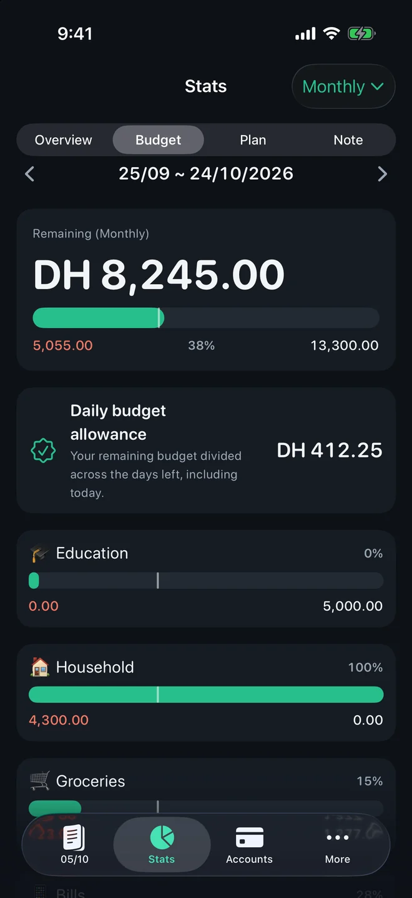
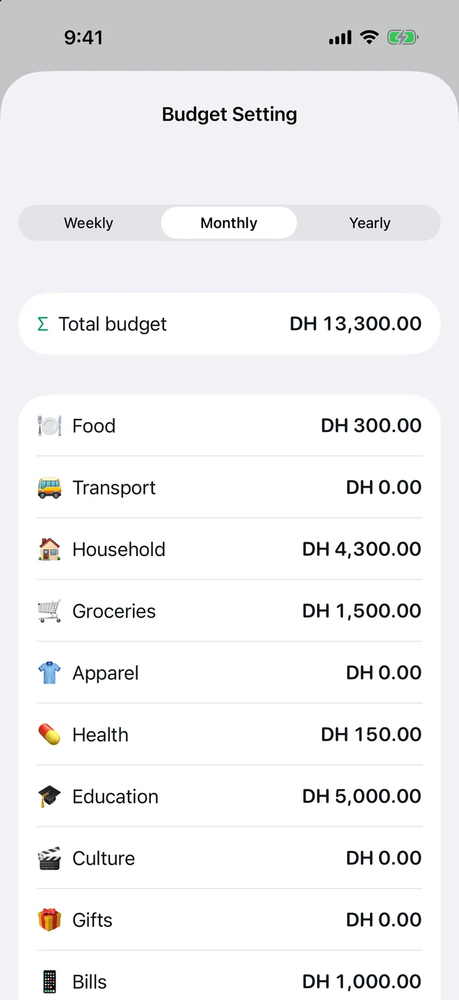
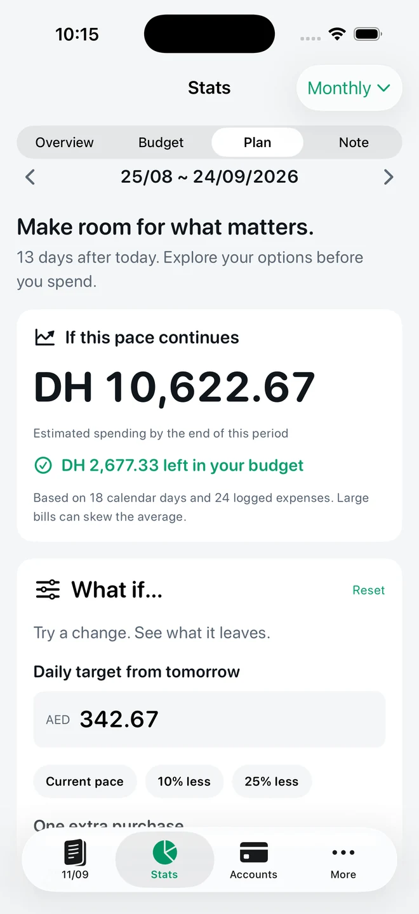

FEATURE · BUDGETS · FREE + PRO
A budget that starts on payday and knows what day it is.
TrackExpenses lets your budget month start on any day from the 1st to the 31st, shows every budget bar with a marker for today, and — with Pro — turns what is left into a daily budget at the top of your list, a forecast and what-if plans.



Real app screens with example records.
Your month, not the calendar's
Paid on the 25th? Set More → Period & Entry to start on the 25th and every list, chart, budget and total runs from 25th to 24th. Days past the end of a short month are clamped, so “31” simply means the last day.
Pacing, not just totals
Sixty percent spent means nothing until you know where the month is. Every budget bar pairs the amount spent with a notch for today, so you can see at a glance whether you are ahead of or behind the month. Set a total budget and per-category budgets under More → Budgets. You keep one budget, in the period length you use; a week or a year is worked out from it by day, and the app says so.
What Pro adds
- Daily budget: the first thing in your daily list — today’s budget, what you spent today and what is left. Repeating bills such as rent come out first, then what is left is shared across the days remaining. Tap it to see how the figure was worked out and what tomorrow looks like. If the budget runs out you see “Budget used up” — free, always.
- Forecast: where this period is heading at your current pace.
- What-if plans: try a daily target or a planned purchase and see the effect before you spend.
There is one daily budget and you never type it in: it always comes from the period’s budget, so the daily number and the total can’t disagree. Historical comparisons, averages and category changes stay free. Try the arithmetic without the app in the daily budget calculator.
Questions
Can the budget month start on my payday?
Yes. Choose any start day from 1 to 31 under More, Period and Entry. It applies to the whole ledger, not just one budget.
Is budgeting free?
Yes. Total and category budgets, the today marker and the payday month are free. Daily allowance, forecasts and what-if plans are Pro.
Does it support biweekly pay?
The setting is a fixed monthly start day. Weekly and yearly views are worked out from your monthly budget, but there is no rolling two-week pay cycle.
Can I set my own daily budget?
No. The daily budget is your period’s budget, minus repeating bills and what you have spent, shared across the days left. To spend less per day, lower the budget.
Your money, easier to follow.
Expense Tracker: SMS & Voice for iPhone and iPad.
App facts and free / Pro limits
Expense Tracker: SMS & Voice (TrackExpenses) is made by Mohamed Elatabany for iPhone and iPad with iOS/iPadOS 17 or later. The app is in English and Arabic, with a full right-to-left Arabic interface. No app account or bank login is required. Optional Shortcuts automations import supported bank SMS and Wallet purchases; the app does not read your Messages inbox. Voice entry creates on-device drafts on compatible devices and languages. The free ledger includes unlimited manual transactions, budgets, historical stats, search, monthly CSV export, private iCloud sync, 3 accounts, 2 recurring rules, 10 saved voice entries per calendar month per device and 10 successful automatic bank SMS imports per calendar month per device. SMS alerts past the free allowance are kept but locked outside totals; upgrading to Pro adds them all, otherwise the next calendar month’s allowance releases as many as it covers. Nothing is dropped and saved history is never locked. Pro adds unlimited voice entry, SMS imports, accounts and recurring rules, forecasts, daily budget guidance, what-if planning, CSV import, date-range CSV exports, full JSON backup and restore, themes and alternate icons. Monthly and annual subscriptions and a one-time lifetime purchase are available. Spending calculations depend on your records and are not financial advice.